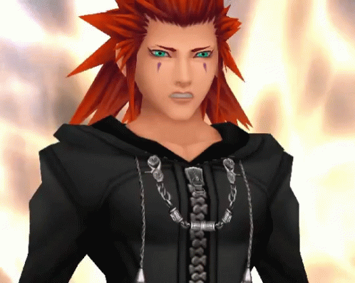
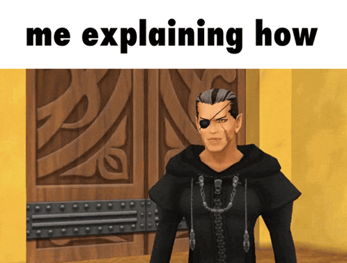

My Friends are my Powers!
Kingdom Hearts, whether you love it, hate it, or just heard about the series, created a long two-decade worth of stories that just recently became available for all modern consoles. Now new commers can freely enjoy this game series that combines battle elements from Final Fantasy, explore the Disney properties and meet a wide range cast of characters from both Final Fantasy and Disney. The unusual crossover that manages to make itself work by telling the tale of friendship and the importance of influential people that help shape how our protagonist grows from their role as the chosen one.
Quicklinks: Timeline, Kingdom Hearts, Extras
How to start this Series

You search online under Reddit, blogs, forums, etc. but there are many conflicting ideas on where to start, don't worry! I got your back! Each entry to these games will have a link to respective sites to help guide for general walkthrough to gameplay grinds. Links to buy the game will be provided based on most accessible option if applicable.
Recommended Order: Release DatesAs a veteran player and fanatic for this series, I strongly urge you to play in release order. This will prevent you from spoiling any reveals that shows up later down the games especially if you follow the collection menu order that listed 358/2 days before Kingdom Hearts 2, so please play Kingdom Hearts 2 before watching 358/2 days.
All original game titles are titled to recent definitive versions.
Click the link to jump to the section
Wait why are there movies? I thought this a game series?

Games that were released on older handheld with the exception of Birth By Sleep and Dream Drop were rereleased in condensed movies as a part of the HD port collections.
Can I skip games I don't find interesting and go straight to the next installments? (eg. only play numbered titles and skipping "side games")
I strongly do not recommend that, I've seen on accounts of people saying they only played Kingdom Hearts I, II and III and complained about the story. I do not know if they are trolling or genuinely set themselves up, it is tempting to think that they are standalone, but they are not. You will be missing out in dialogue details, contexts requiring previous knowledge and lose the impact that carries over, this game wants you to engage with the stories.
Kingdom Hearts Final Mix
Recommended to start here, the age of this game translate over to modern consoles. This is the most clunkiest gameplay you’ll ever deal with for this series, but fortunately you can get used to it.

The entry of the series, follow a young 14 year old boy named Sora, who he and his friends Riku and Kairi build a raft together to leave their island. After tragedy strikes, Sora was left to fend for himself while darkness takes over his home. Meanwhile in another world, Donald and Goofy are tasked by their King to “find the key”, which leads them to a refugee world called Traverse Town. Sora also ends up at Traverse Town, and finds out that he now wields a magical item called the “keyblade”. After running into Donald and Goofy, they journey together to find and close the worlds to prevent darkness from taking over.
Kingdom Hearts Re: Chain of Memories

Sora and his gang who finally beat the big bad, worlds are saved, Kairi is safe back at home, now on a new mission to find King Mickey and his best friend Riku after closing the door to Kingdom Hearts. While chasing Pluto who seems to be carrying a letter from the King, the group ends up in front of a mysterious castle that happens to be a strong hold for these mysterious black cloaked group.
The second game of the series was originally on Gameboy Advance, later ported to the Playstation 2 with voice acting, has a change of gameplay that most people will struggle on. This game utilizes cards mechanic while keeping the typical hack n slash, I find this guide to be helpful and does not spoil any story contents for each world you traverse and boss fights. This is essentially a cheese guide to help you get through the game if you choose to play. If for whatever reason you decided to not play due to gameplay, you are welcome to learn the story through cutscene videos found on Youtube.
Kingdom Hearts II Final Mix

Welcome to Kingdom Hearts  (two).
Regarded as the best sequel game of the whole series by the fandom, the gameplay is a step up compared to the simple hack n slash from the first being the most fluid, fast and flashy that makes you question that it came from a Playstation 2 game. With a new gameplay mechanic that is the first and last time you ever see: reaction commands. The reaction commands gives either a new way to defeat the heartless and the mysterious new enemies a run for their money or gives a mini cinematic of Sora who self-improve fights after sleeping in cold storage for a year. Ok Sora we see you, interestingly if you look for forums of people’s rating back in the day, no one liked the reaction commands compared to someone’s review in recent times. Because of this, the director never made the return for reaction commands, but people have been wishing for it to come back after Kingdom Hearts III, so it will in future titles.
Lastly there is another gameplay mechanic that is exclusive to Kingdom Hearts 2 called Drive Form. The tutorial will mention it but what it doesn’t tell you is how each drive form controls a specific movement which by, leveling up, will eventually grant you that movement permanently. Originally there was not much use outside of battle and quality of life, but now in the Final Mix version, it became necessary to progress the optional post-game area Cavern of Remembrance and/or make the other optional battles easier. Here is a guide that will tell you the best farming area to level up these drive forms, while it is not required for the story, you can get away with just bashing around with the keyblade.

This game was the first game I started with, I’m the only idiot in the family who has this unhealthy attachment to the series. It was probably factored in the fact that I liked the Disney movies growing up so combine it with ‘oh there’s Disney characters on the cover’. I literally do not know who I’ll be if my parents didn’t get this game from Walmart…
Kingdom Hearts 358/2 Days

The first of the Kingdom Hearts collection to get a movie instead of a port rip, this features a 3-hour long cutscenes recapping the DS game with mostly voiced cutscenes and some text to read for some missions. While this gets the job done, the premise is the most heart wrenching story that follows a newly recruited fellow named Roxas who later learns the true purpose of his recruitment. There are some scenes that are more impactful in the original game, which is unfortunate, but fortunately you can find online of the DS port on an emulator. I am not linking it for obvious reasons but it should be searchable. When I played this game on the DS, I never finished it for the longest time as a kid because one, I was stuck on a boss fight mission and two, I was level one and didn't know you had to manually update your level. But once I passed the hurdle, I cried at the end of the game.
Kingdom Hearts Birth By Sleep Final Mix

A prequel that released on the PSP that follows a trio who are keyblade warriors preparing to take a mark of mastery exam, which is their life’s goals. What’s unique to this story is that you follow three separate characters and follow their POV of the events. This sounds tedious but playing through the game without worrying about 100% completion should not take as long. In concern to which character order you should play, the character order I typically play are Terra > Ventus > Aqua which is the default during selection. Technically you can start with either Ventus or Terra, but you definitely need to play Aqua last due to end game story relevance. Each characters will obtain various keyblades (minus the keyblades earned in Disney worlds) that put emphasis into the archtype of each character stats strength. Starting with Terra while his personal stats are equal between strength and magic, his keyblades put more oomph to his strength. Next, Ventus’s personal stats are about equal in strength and defense, his keyblade may either put more to strength or be about the same in both strength and magic. And lastly Aqua’s personal stats starts with an obvious more stats with magic compared to the other stats, and her keyblades also put more oomph into magic while some will even it out with some strength. And she is your first female playable character, girl boss. What the hell am I pulling these info from? (source: for general leveling stats (do not read this whole guide obviously) and for all possible earned keyblades between all the characters, spoilers to where you need to go to earn it.)
Also if you decided to 100% complete this game or platinum trophy, I applaud to you because this game is infamous for simply the fact that any collecting, crafting or post-game enemies to defeat has to be done three times.

Here is a guide that should make your crafting easier, See Guide Here.
Kingdom Hearts Re:Coded

Re:Coded was originally a mobile game that was released episodic in Japan that later became a DS game international. This game is infamous for not only the story, but by the fandom as the most skippable game, this with Re:COM for gameplay. While the collection made this as a movie, the story can be summarized as a strange message appears in Jiminy’s journal that was never there before and asked King Mickey for help. While they digitalize the journal, they happen to digitalize a data version of Sora and asked him to reenact to figure out where the strange message had come from. While data Sora chases a cloaked figure that appeared in the digital worlds, the castle in the real world was overrun by heartless and just in time, data Sora arrives. Confused, the cloaked figure turns out to be Riku, but a form of the Journal (how the hell did I not remember that I’m a fake fan). But data Sora and King Mickey can’t coexisting in the real world, right? Data Riku explains that they are now in the digital world called the Datascape. You got your typical antagonist which are the real-world Maleficent and Pete who have their own evil agenda that are up to no good, but instead of an elaborate plan, they are there take over the datascape, sounds like a cliché plot for them. The wiki never mentions it, but how the real-world Pete and Maleficent got into the datascape is because Pete was going to confront King Mickey about his plan like an idiot poop face, but then a bright light engulfed somewhere in the datascape world, it was so bright that it also took some participants in the real world so that’s how Pete got in. He obviously called in Maleficent but if [this section that spoils a plot of the Disney Castle lore] likely has a [minor theorizing that relates to the Disney Castle lore]. After that first part is resolved and King Mickey is back into the real world, data Sora has one more thing left to do, to figure out the strange message and how it relates to him. Apparently, the DS of Re:Coded has the best gameplay combat compared to 358/2 days; I know my sister can attest to that. I hate that I had to refer to the wiki to remember this plot of a story.
Kingdom Hearts Dream Drop Distance HD

Dream drop, 3D, or DDD, this game continues after Kingdom Hearts 2 and the events of Re:coded where Sora and Riku are summoned by Master Yen Sid to prepare to take the mark of mastery in order to be able to face the formidable foe, Master Xehanort and rescue their lost allies. During the test they are to traverse through seven of the sleeping worlds to free it from its sleeping state and restore the worlds. During their journey, Sora and Riku are aided by these new creatures which they can command called Dream Eaters, the enemies you face in the sleeping worlds are called Nightmares. While the exam was supposed to be a simple test, it becomes apparent that a force of a particular group was interfering.
This gameplay incorporate gameplay elements in BBS and is not the first time you play with Sora and Riku. A unique way they make you play between the two protagonist is the creation of a drop system which is a timer. This makes you unable to switch manually and must play within a certain amount of time between them except for scripted drops. But the only downside is that if you were in a middle of a boss fight and your drop timer ran out, you will have to restart that boss fight, first world problem. There is also a new movement called flow motion, this helps you explore new environment that is made to feel vast compared to the last entries. I personally did not know how to use it at first because I played Kingdom Hearts 3 before dream drop, oops?
Lastly there is a story element that is subjective, it is used as a plot point for a reason why this character does the thing as a reason they do and not everyone liked it. And because of that, it became one of the many opinions to what people generally don’t like about this game. I personally did not finish this game because I got stuck on one of the late game boss fights and I didn’t reach to the scenario where that plot point happens to make my judgement on it.
I decided to find a guide based on the Dream Eaters because your abilities are tied to the creatures, that means managing them instead of the typical way of leveling up and earning them.
Kingdom Hearts X Back Cover

Before we had our global mobile game called Union Cross released in 2015, there was a browser game called X
[chi]
that was released in Japan and never saw the light in the West. While although we did get Union Cross,
apparently the story in X is not the same in Union Cross so I decided to only provide Union Cross Youtube
video,
warning do not watch in one sitting, its 11 hours long. I remember playing Union Cross on my phone back in
High
School, there was a lot of missions you had to go through (it was 700+ missions  ) and I only played up to 200 because I didn't have good stats as a free to play to push
through, oh well.
) and I only played up to 200 because I didn't have good stats as a free to play to push
through, oh well.
I am lumping Back Cover with Union Cross because the premises share the same characters and there is no way to play these games anymore (same for dark road recently). Since it's shutdown in 2021 (Union Cross), the only viable option is watching cutscenes on Youtube.
I hate to confess, I never quite finished Union Cross massive story other than too many missions for bits and pieces of the story, but now someone complied all of it in one go. So that means I have no excuse to skip the contents of Union Cross and for Dark Road which I also did not consume. To give where credit is due, people have praised this game and Dark Road for the best writing.
Kingdom Hearts Birth By Sleep 0.2 A Fragmentary Passage

The promised Birth By Sleep volume 0.5 takes place after the events of Birth By Sleep where Master Aqua falls to the realm of darkness and stumbles upon Castle of Dreams. In the twisted reality where time flows differently, she also starts to hallucinate her friends and descend deep in her despair and darkness. This is a short game that fans dubbed as a tech demo since it is a precursor of what we expect in terms of models and gameplay wise before the release of Kingdom Hearts III.
Also why did I buy the 2.8 collection separately when I should have bought the collection that has all of the HD in one package excluding KH 3 instead? That would’ve satisfied my KH 2 craving to play on PS4 and I didn’t have to buy the 1.5 and 2.5 collection merge separate either !!!! dumb ass. Actually, I did buy the 1.5 and 2.5 collection separate during the initial release on PS3, who am I to say.
Kingdom Hearts III

Kingdom Hearts III takes place after Dream drop, all I will say is that Sora has a new task to keep up ever since his powers were stripped away. The gameplay is a culmination of all of the past game mechanic mashed into one in an updated look, there is a DLC that expands the base game story but also adds in additional content called Limit Cut. I saw an easy mistake to do when watching scenes in Re: Mind, it will recap certain base game scenes, but it will have new scenes that were not present in the base game. You should keep in mind before trying to skip cutscenes.
Funny story how I got this game, my sister won a best buy gift card from those rigged arcade games and while I didn’t expect myself to play KH 3 on initial release year, with the gift card I decided to get it.
Also not to be a downer but in the community, Kingdom Hearts III was the most anticipated and long waited numbered title that faced a lot of disappointment between fans. There are some valid reasons to why this happened, first because of the hype it is kind of inevitable to get loud disappointment among long time fans that waited years for this game to release. I too also waited years for this installment to release, it was yesterday that I was in middle school and the announcement trailer revealing the development was back in 2013. Another reason is that for those long time fans and even casual had all of the time to sit on with the stories to make up a head cannon on what they think will happen at the end of KH 3. All I can really say is to not involve yourself in any online opinions of this game in both positive and negative, for some reason this game is a trigger to certain fans and they would fight on you that KH 2 is so much better than KH 3. I don’t know why they always compare it to KH 2 beside the fact that it is likely nostalgia and whichever they deemed better than the other. I pulled this observation out of twitter, but I am sure in other sites there are people that share the same sentiment, lastly I also noticed for new comer who didn’t had to wait between games loved this game so yeah. There is also discussion that people are going to shit on KH 4 whenever that releases lol. To be fair KH 2 is my nostalgia game that I revisit more than the others, but I wouldn’t really put KH 3 burning on a stake just because I did not have strong feelings for it.
Kingdom Hearts Melody of Memories

Melody of Memories a rhythm game that recently released back in October 2020, I remember because I was a sophomore to junior and my classes was still on Zoom. I digress, this is the only spin off game that is never included in package and is always sold separately. If playing rhythm game is not your forte, you can just watch the cutscenes on Youtube. I will warn you that it is literally a recap from Kairi explaining the events all the way from the first game (minus UX (union cross)). You only receive new story elements that teases the next arc at the end of the game and in my opinion, she's really done dirty in this game.
Kingdom Hearts Dark Road
Servers recently turned Dark Road into an offline game in 2022, but the game is no longer accessible to play since it has been delisted off the app store of this year. Only viable option is watching cutscenes on YouTube.
You either love this guy or hate him, he is everywhere lol. This game revolves around our favorite character: Xehanort, if you want to learn more about him, click here! Please don't, there is no point in learning his backstory if you did not finish all of the games on this long laundry list of a series. This is the last game to be released for this whole arc while we wait for the upcoming mobile game (again for the third time) called Missing Link and the next anticipated game, Kingdom Hearts IV.
End
If you reached this far into the article, congrats! You just finished the Dark Seeker Saga Arc, as of this current year there are a total of two ongoing projects being developed that falls under a new arc called The Lost Master Arc. Don't know what that means? Don't worry about it :p
I hope all the yapping of the summaries and guides provided are useful to you and the anecdotes are fun to read. If the summaries feels like I am coping out in providing enough information, I am so sorry. I was trying so hard not to reveal too much since these stories have a lot that goes on and I don’t want to accidentally reveal any of the driving factors for new comers reading it.
Extras:
Love the games but want more? There are several options you can get your hands on:

- Kingdom Hearts Manga
- Gives recaps of the story in games in funny lighthearted way. Rent them from the library if I were you, for better translation.
- Kingdom Hearts Light Novel
- Similar to manga but more closer to the games tones, establish points that never shown in games. While it can be considered non-canon especially for important characters thoughts and actions, Tetsuya Nomura is still credited in these light novels.
- Kingdom Hearts Ultimania
- If you rather not spend money for this book, one alternative would be KHInsider that holds all translated interviews post game developments. You may have seen this website for the collection of other video game music. See KHInsider here
- The original Kingdom Hearts released games
- You are more than just a fan, you are now a collector who thinks about this game series a lot. You can buy the original KH Re:Chain and 2 on Square's website for $20 each.
- Link to Square's Store